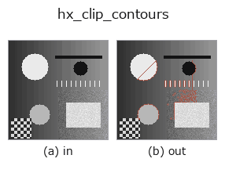

halcon_ext op• Data kinds: contour → contour
• Call: fullseye.apply(img, "hx_clip_contours", a=0.5, b=0.5) (2-D model = एक image + दो scalar knobs a,b∈[0,1])
• HALCON समकक्ष: clip_contours_xld (अर्थ और parameters समझने के लिए HALCON reference उपयोगी है)

*Figure synthetic 128×128 input पर सच में चलाकर मिला output है। बाईं ओर input, दाईं ओर output। Point clouds ऊपर से देखे गए scatter के रूप में (brightness = z), 1-D series line के रूप में, volumes z दिशा में maximum-intensity projection के रूप में, videos बीच के frame के रूप में, complex images amplitude के रूप में, और जो return values चित्र नहीं बन सकते वे स्वयं values के रूप में दिखाए जाते हैं।*
Knob a को बदलकर (0.1 / 0.5 / 0.9, दूसरा knob default पर):
▸ hx_clip_contours: knob a को बदलने का figure (docs site)
Knob b को बदलकर (0.1 / 0.5 / 0.9, दूसरा knob default पर):
▸ hx_clip_contours: knob b को बदलने का figure (docs site)
Stages (पहले आने वाले ops → यह op, बाएँ से क्रम में):
▸ hx_clip_contours: stages का figure (docs site)
दूसरी images पर भी (synthetic scene / photo / coins। ऊपर की row में inputs, नीचे की row में उनके outputs। Knobs default पर):
▸ hx_clip_contours: दूसरी images पर output (docs site)
Contour को image domain (केंद्र में margin a/b छोड़ने वाला आयत) तक clip करता है (range से बाहर के points हटाता है)।
> नीचे का विस्तृत विवरण मूल text में है — सारांश और headings का अनुवाद हो चुका है।
contour dict の各 contour について、画像の内側に取った矩形 my <= row <= H-1-my、mx <= col <= W-1-mx に入る点だけを残し、1 点も残らない contour は捨てて返す。
• a → 上下の余白 my = a*0.4*H(0〜高さの 40%)。
• b → 左右の余白 mx = b*0.4*W(0〜幅の 40%)。a=b=0 なら画像範囲 [0, H-1] × [0, W-1] でのクリップ。
点を間引くだけで contour は分割しないため、矩形外を通って戻ってくる contour は残った点どうしが直接つながった形(ジャンプ)になる。分割が要るなら後段で hx_split_contours。中心からの割合で切る類似 op に hx_crop_contours(中心基準の幅・高さ指定)。線長で足切りする xg_clip_contours とは別物。
• gallery2d_halcon_ext family guide
• Sample data catalog (DL URL / license) — 2-D के लिए skimage.data (BSD/public) + synthetic, 3-D के लिए real data sources (Stanford/PDS आदि) के DL URL।
• Operators का स्रोत और संदर्भ — इस op family के मूल research/methods के स्रोत।
• Algorithm का मानक स्रोत (लेखक, वर्ष) और उपयोग ऊपर की family usage guide में दिए गए हैं।
नीचे का program सच में चलता है, यह जाँचा गया है (figure वाला ही input)। Studio की help में यह block buttons बन जाता है, जिनसे इसे वहीं load करके चलाया जा सकता है।
threshold 0.50 0.50 sk_find_contours 0.50 0.50 hx_clip_contours 0.50 0.50
▸ यह pipeline load करें · Load करके चलाएँ
• gallery2d_halcon_ext — py -3.11 examples/gallery2d_halcon_ext.py
contour को input के रूप में लेते हैं)identity · select_contours · smooth_contours · fit_line_contours · contours_to_region · count_contours · total_length · select_contours_xld
halcon_ext)hx_gen_circle · hx_gen_ellipse · hx_gen_rectangle2 · hx_gen_checker_region · hx_gen_grid_region · hx_gabor · hx_fit_surface1 · hx_fit_surface2
*Provenance: ops.py — 2D operator registry. यह per-op note tools/opdocs.py md से अपने-आप generate होता है (हाथ से edit न करें)।*
© 2026 Kazufumi Furuse — Fullseye operator documentation. Licensed under Apache-2.0.